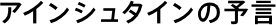
重力波、それは光速で伝わる時空のさざ波です。これは1916年にアインシュタインが発表した一般相対性理論から予言される波で、その存在は1980年代にハルスとテイラーらにより間接的に証明されています。彼らは中性子星連星PSR1913+16の軌道を10年以上にわたり観測することで、その距離が重力波の放出によって徐々に近づいていくことを発見しました。この業績により彼らはノーベル物理学賞を受賞しました。また、近年ではOJ287と呼ばれるバースト星が重力波を放出しながら公転するブラックホール連星であるのではないかという可能性も示唆されています。
このように重力波は天文学・天体物理学においてはすでになくてはならないものとして扱われていますが、その直接観測はいまだ誰も成し遂げていません。重力波が検出されれば一般相対性理論の正しさが再び証明されると同時に、重力波を新たな宇宙を見る手段とした「重力波天文学」が生まれると期待されています。
アインシュタイン
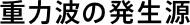
重力波は質量を持った物体が加速度運動することで放射されます。しかし観測できるほどの大きな振幅の重力波を発生させるには、高密度で非常に大きな質量の物体が加速度運動する必要があります。したがって重力波の発生源としては以下のような天体運動、天体現象が挙げられます。
- コンパクト連星の公転イメージ図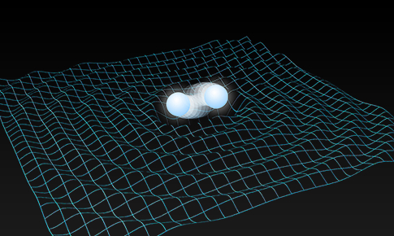
- コンパクト連星の衝突合体イメージ図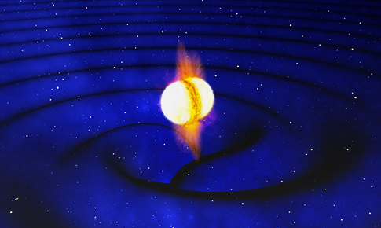
- 中性子星の自転画像中央の青白い光が中性子星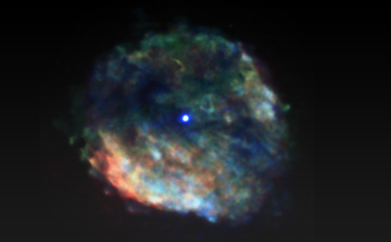
- 超新星爆発画像は超新星残骸のかに星雲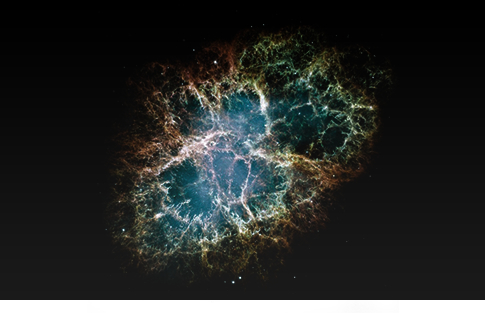
- 初期宇宙からの重力波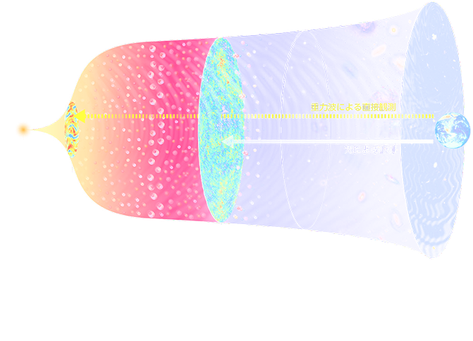
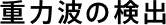
重力波の検出実験はウェーバーらのチームが共鳴型検出器を作製した1960年代からスタートしました。現在はレーザー干渉計型検出器が主流となっています。重力波は自由質量に対してその固有距離を変化させる性質があります。そこでレーザー干渉計型検出器ではこの性質をたくみに利用し、レーザーを使い鏡までの固有距離を測定します。このとき鏡は自由質量でなければならないため、ワイヤーを使って振り子のように吊られている必要があります。
レーザー干渉計の基本となるのはマイケルソン干渉計です。マイケルソン干渉計はビームスプリッターでレーザーをL字にわけ、再びビームスプリッターに戻ってきたレーザーを干渉させる装置です。ビームスプリッターの一方に置かれた光検出器上では干渉縞が表れます。干渉計に重力波が到来すると一方の腕の光路長が伸び、もう一方が縮むため、干渉縞の明暗が変化します。よって、この明暗を観測することで重力波が検出できます。
また、この他にも、パルサーからの信号のタイミングを測定することで重力波を検出するパルサータイミング法などの検出法もあります。
- レーザー干渉計の概念図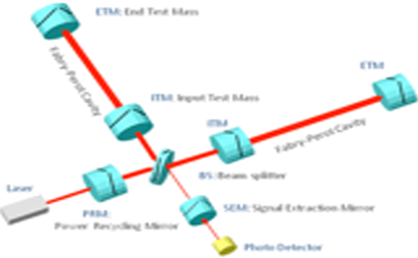
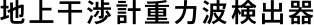
現在地上検出器で主流となっているのはレーザー干渉計です。レーザー干渉計は基本的には腕を伸ばすほど重力波に対する感度が上がるため、なるべく大きな装置を建設することが要求されます。
国立天文台には基線長（腕の長さ）300mのレーザー干渉計TAMA300が設置されています。TAMA300は世界の大型干渉計計画に先がけて、1999年に観測を始めました。当時の世界最高感度や初の長期観測などを成し遂げました。日本ではこの他に基線長100mのCLIO検出器も稼働しており基線長3kmを持つKAGRAのための技術開発・研究を行っています。海外ではGEO600、VIRGO、LIGOなどが稼働しています。
- TAMA300センタールーム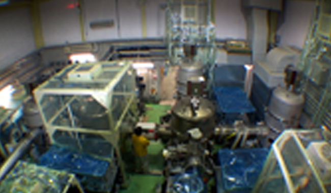
- ワイヤーで懸架された鏡